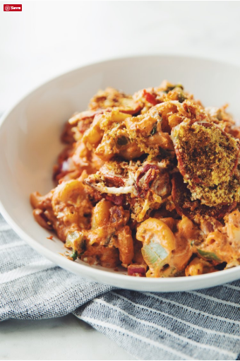

Vegan Pizza Mac & Cheese

Ingredients
Pasta & Mix ‘ins:
3 C elbow macaroni
1 pkg vegan pepperoni slices
1 1/2 C vegan mozzarella shreds
1/2 C finely diced green bell pepper
1/2 C finely diced red onion
2 tbsp finely chopped fresh basil
Topping Ingredients:
1/4 C bread crumbs
2 tbsp nutritional yeast
1 tsp dried oregano
1 tsp dried basil
1 tsp sea salt
Cheese Sauce:
1 C raw cashews (soaked for 20 minutes in hot water)
2 1/4 C nondairy milk
1/3 cup vegetable oil
1/3 C nutritional yeast
1/3 C pizza sauce + 2/3 cup extra for dolloping on top of the mac & cheese
1/4 cup lemon juice
3 tbsp tomato paste
1 1/2 tbsp miso paste
2 tsp chili powder
2 tsp garlic powder
2 tsp onion powder
2 tsp arrowroot flour
1 tsp sea salt
1/2 tsp ground pepper
Directions:
- Preheat the oven to 180°C.
- To cook the pasta, bring a pot of salted water to a boil. Cook the pasta until al dente. Drain, but do not rinse.
- To prepare the topping, combine the bread crumbs, nutritional yeast, oregano, basil, and sea salt in a small bowl.
- To make the sauce, drain and rinse the cashews. Add to a high- powered blender with the remaining ingredients and blend on high until very smooth.
- In a large bowl combine the pasta with all of the cheese sauce, 1 cup of mozzarella shreds, green bell pepper, red onion, fresh basil and oregano and stir until well coated and combined. What looks like an excess amount of sauce will thicken during baking!
- Pour half of this mixture into a deep square baking dish. Take the extra 2/3 cup of pizza sauce and dollop some of it on top of this first layer of mac and cheese. Then add the remaining mac & cheese. Sprinkle half the bread crumb mixture evenly on top. Then add pepperoni slices and 1/4 cup of the mozzarella shreds. Then add the remaining bread crumbs and 1/4 cup of remaining mozzarella shreds on evenly on top. And dollop the remaining pizza sauce on top as well.
- Cover with aluminum foil and bake for 20 minutes.
- Remove the foil and bake on the top rack of the oven for 10 minutes until the top is golden brown and the sides are bubbling slightly. Depending on your oven and the distribution of heat, you might want to set the skillet under the broiler for 5 minutes to get the top crispier instead of continuing to bake at 180°C.
- Serve immediately. When reheating leftovers you may want to add more nondairy milk to get it creamy once again.

What I Have Learned
- Patience
- Vegan food can be tasty
- Improvisation
- How to make vegan cheese sauce